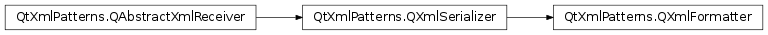

QXmlFormatter¶
Synopsis¶
Functions¶
- def
indentationDepth() - def
setIndentationDepth(depth)
Detailed Description¶
The
PySide2.QtXmlPatterns.QXmlFormatterclass is an implementation ofPySide2.QtXmlPatterns.QXmlSerializerfor transforming XQuery output into formatted XML.
PySide2.QtXmlPatterns.QXmlFormatteris a subclass ofPySide2.QtXmlPatterns.QXmlSerializerthat formats the XML output to make it easier for humans to read.
PySide2.QtXmlPatterns.QXmlSerializeroutputs XML without adding unnecessary whitespace. In particular, it does not add newlines and indentation. To make the XML output easier to read,PySide2.QtXmlPatterns.QXmlFormatteradds newlines and indentation by adding, removing, and modifyingsequence nodesthat only consist of whitespace. It also modifies whitespace in other places where it is not significant; e.g., between attributes and in the document prologue.For example, where the base class
PySide2.QtXmlPatterns.QXmlSerializerwould output this:<Code snippet "/tmp/qt-doc-test-511/_qt5/qtbase/patternist/notIndented.xml" not found>
PySide2.QtXmlPatterns.QXmlFormatteroutputs this:<Code snippet "/tmp/qt-doc-test-511/_qt5/qtbase/patternist/indented.xml" not found>If you just want to serialize your XML in a human-readable format, use
PySide2.QtXmlPatterns.QXmlFormatteras it is. The default indentation level is 4 spaces, but you can set your own indentation valuePySide2.QtXmlPatterns.QXmlFormatter.setIndentationDepth().The newlines and indentation added by
PySide2.QtXmlPatterns.QXmlFormatterare suitable for common formats, such as XHTML, SVG, or Docbook, where whitespace is not significant. However, if your XML will be used as input where whitespace is significant, then you must write your own subclass ofPySide2.QtXmlPatterns.QXmlSerializeror QAbstractXmlReceiver.Note that using
PySide2.QtXmlPatterns.QXmlFormatterinstead ofPySide2.QtXmlPatterns.QXmlSerializerwill increase computational overhead and document storage size due to the insertion of whitespace.Note also that the indentation style used by
PySide2.QtXmlPatterns.QXmlFormatterremains loosely defined and may change in future versions of Qt. If a specific indentation style is required then either use the base classPySide2.QtXmlPatterns.QXmlSerializerdirectly, or write your own subclass ofPySide2.QtXmlPatterns.QXmlSerializeror QAbstractXmlReceiver. Alternatively, you can subclassPySide2.QtXmlPatterns.QXmlFormatterand reimplement the callbacks there.QXmlQuery query; query.setQuery("doc('index.html')/html/body/p[1]"); QXmlFormatter formatter(query, myOutputDevice); formatter.setIndentationDepth(2); query.evaluateTo(&formatter);
-
class
PySide2.QtXmlPatterns.QXmlFormatter(query, outputDevice)¶ Parameters: - query –
PySide2.QtXmlPatterns.QXmlQuery - outputDevice –
PySide2.QtCore.QIODevice
Constructs a formatter that uses the name pool and message handler in
query, and writes the result tooutputDeviceas formatted XML.outputDeviceis passed directly toPySide2.QtXmlPatterns.QXmlSerializer‘s constructor.See also
- query –
-
PySide2.QtXmlPatterns.QXmlFormatter.indentationDepth()¶ Return type: PySide2.QtCore.intReturns the number of spaces
PySide2.QtXmlPatterns.QXmlFormatterwill output for each indentation level. The default is four.
-
PySide2.QtXmlPatterns.QXmlFormatter.setIndentationDepth(depth)¶ Parameters: depth – PySide2.QtCore.intSets
depthto be the number of spacesPySide2.QtXmlPatterns.QXmlFormatterwill output for level of indentation. The default is four.
© 2018 The Qt Company Ltd. Documentation contributions included herein are the copyrights of their respective owners. The documentation provided herein is licensed under the terms of the GNU Free Documentation License version 1.3 as published by the Free Software Foundation. Qt and respective logos are trademarks of The Qt Company Ltd. in Finland and/or other countries worldwide. All other trademarks are property of their respective owners.